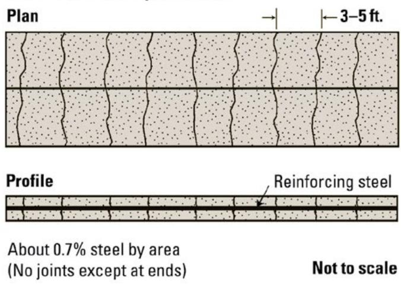

Pavement Surface Smoothness and Texture Impact
The Pavement Surface Smoothness and Texture Impact concept guides transportation agencies in selecting design, construction, and management strategies that produce a smooth, appropriately textured, and structurally responsive pavement surface [1][2]. By targeting low International Roughness Index values and a macro‑texture—preferably negative—that minimizes tire‑tread energy loss, the approach seeks to cut vehicle fuel use, greenhouse‑gas emissions, noise, runoff, temperature effects and associated economic costs throughout the pavement’s service life [1][2]. Implementation relies on quantitative condition data (IRI, macro‑texture metrics), structural characteristics (layer thicknesses, material stiffness), traffic and environmental inputs, and is evaluated through life‑cycle cost/assessment tools to ensure that the benefits—especially on high‑traffic corridors—outweigh the higher initial construction and maintenance expenditures [1][2].
Sources (2)
Purpose and decision context
The concept is intended to support agencies in deciding which pavement design, construction, and management approaches to adopt so that they achieve and preserve a smooth, appropriately textured and structurally responsive surface. By selecting designs and maintenance strategies that prioritize such smoothness, the agency can reduce vehicle fuel consumption, emissions, noise, runoff, temperature effects, and associated economic costs throughout the pavement’s service life. [1][2]
[1] — Ch. 2 (pp. 29–30); [2] — Ch. 11 (pp. 109–110)
The guides identify that rough pavement surfaces raise vehicle fuel consumption and greenhouse‑gas emissions, creating direct economic burdens for users and broader environmental costs, and that the dominant issue is the excessive energy use and emissions generated during the use phase of a roadway, which accounts for the greatest environmental burden over its life cycle. Accordingly, the performance goal across sources is to achieve and preserve low International Roughness Index values and a macrotexture that minimizes energy loss—favoring negative over positive macrotexture—to keep fuel use, emissions, and vehicle wear at a minimum throughout the pavement’s service life, while also minimizing the economic, environmental, and social impacts of vehicle operations—particularly fuel use and related emissions—by controlling surface smoothness and structural response. [1][2]
[1] — Ch. 2 (pp. 29–30); [2] — Ch. 11 (pp. 109–110)
Scope and applicability
Pavement surface smoothness and texture considerations are most appropriate for high‑traffic projects such as interstate highways and major arterials, where the environmental and economic benefits of reduced fuel consumption outweigh the additional construction and maintenance costs; during the design stage these factors guide the selection of concrete pavement types like continuously reinforced concrete (CRCP), thicker slabs, stronger bases, load‑transfer devices, and preservation methods such as diamond grinding. For lower‑volume urban assets the impact is less critical, so smoothness criteria are applied mainly to meet minimum vehicle‑damage and safety requirements rather than to achieve fuel‑efficiency gains. [1]
The figure below illustrates a continuously reinforced concrete pavement (CRCP), one of the specific design options selected to address smoothness and texture requirements on high-traffic projects.

Plan and profile view of a continuously reinforced concrete pavement (CRCP) section. [1]The figure displays the plan and profile views of a concrete pavement containing continuous longitudinal reinforcing steel bars with no transverse joints except at the ends.
[1] — Ch. 2 (pp. 29–30)
When a pavement carries low traffic volumes, the fuel‑saving benefit of maintaining maximum smoothness or specific macrotexture is outweighed by other priorities such as runoff control, future maintenance, utility accommodation, surface reflectivity, aesthetics, longevity and ease of repair; in these cases a design that emphasizes durability, aesthetic features, or simple reparability rather than extreme smoothness is more appropriate. The decision should weigh the payback time for environmental benefits against the higher initial costs of achieving and preserving smoothness, often leading to alternatives like thinner slabs, short joint spacing, or concrete pavers. [1]
[1] — Ch. 2 (pp. 29–30)
Information needs
The concept requires quantitative condition data such as “International Roughness Index values for smoothness” and “macro‑texture metrics (especially the 0.02–2 in wavelength range)”, together with “pavement roughness, surface texture, and stiffness”. Structural information must include “layer thicknesses, material stiffnesses, and type” that define the pavement’s viscoelastic response under varying wheel loads, speeds, temperatures and moisture. Traffic data should capture “site‑specific traffic characteristics that drive fuel use and emissions” and distinguish high‑volume corridors from low‑volume links; vehicle loading and speed distributions are also needed to evaluate the energy penalty of roughness or positive macrotexture. Economic inputs must encompass “initial construction and material production costs, projected maintenance/rehabilitation expenses, and life‑cycle cost analysis (LCCA) results” as well as “cost information that reflects the economic, environmental, and social impacts of vehicle operations”. Environmental information is required to “capture GHG emissions from materials, construction, and the additional fuel burned due to roughness for a given traffic level” and should also include “energy consumption, emissions, noise, runoff, temperature, solar reflectance, lighting needs, and long‑term concrete carbonation” (or, equivalently, “Other use phase factors that warrant consideration include solar reflectance, lighting needs, long-term concrete carbonation, water run‑off, and traffic delays”). Stakeholder input comes from “Stakeholder considerations such as vehicle wear, freight damage, driver comfort and safety are incorporated as minimum smoothness criteria for low‑volume pavements even when environmental justification is weak” and is represented by “The managing agency’s design, construction, and maintenance decisions serve as the primary stakeholder input for controlling these surface properties and mitigating use‑phase impacts such as traffic delays.” [1][2]
[1] — Ch. 2 (pp. 29–30); [2] — Ch. 11 (pp. 109–110)
Alternatives
When evaluating the impact of pavement surface smoothness and texture, feasible alternatives to compare include high‑volume designs that prioritize long‑term smoothness—such as continuously reinforced concrete pavement (CRCP) with thicker slabs, stronger bases, enhanced load‑transfer devices, good drainage, and periodic diamond grinding—and low‑volume options that emphasize other attributes like thin sections, short joint spacing or the use of concrete pavers for aesthetic and repairability reasons; each alternative must be weighed against its initial economic and environmental costs versus future maintenance and life‑cycle impacts. [1]
[1] — Ch. 2 (pp. 29–30)
Decision criteria
The decision on pavement surface smoothness and texture should be controlled primarily by performance, sustainability, cost, and public impact. Across the guides, smoothness is described as ‘pavement smoothness is a key performance indicator’ because it directly influences vehicle fuel use, emissions, ride quality and freight damage. The economic dimension is highlighted by noting that ‘Smoothness also affects vehicle life and damage to freight and thus has direct and measurable economic costs to the user,’ and decisions must ‘minimize the economic, environmental, and social impact of vehicle operations.’ Sustainability considerations require evaluating the environmental payback; ‘The consideration of payback time, which is the period between the initial environmental impact and the time to achieve a zero difference compared to the standard approach, is an important design consideration,’ and for high‑traffic roads ‘for pavements carrying heavy traffic volumes, the environmental benefits of keeping the pavement in a smooth condition far outweigh the negative environmental impacts.’ Social or public impact is included as part of the broader community effects that agencies aim to reduce. The guides also note that ‘pavement roughness, surface texture, and stiffness can be controlled by the managing agency’ and that ‘The use phase … has the largest life-cycle impact on the environment,’ reinforcing that these criteria together should drive the decision. [1][2]
[1] — Ch. 2 (pp. 29–30); [2] — Ch. 11 (pp. 109–110)
When weighing the competing criteria for pavement surface smoothness and texture impact, smoothness should receive the highest priority because it directly drives fuel consumption, emissions, vehicle wear and user experience; macrotexture is a secondary factor, with negative macrotexture preferred over positive to minimize tire‑tread energy loss, and structural responsiveness is tertiary, mitigated by stiffer concrete designs. The relative emphasis shifts with traffic volume: high‑volume roads merit the strongest focus on maintaining low roughness throughout service life, while low‑volume roads allow other considerations such as longevity, aesthetics and repair ease to carry more weight. [1]
[1] — Ch. 2 (pp. 29–30)
Analysis methods and tools
The Pavement Surface Smoothness and Texture Impact framework evaluates alternatives primarily through life‑cycle cost analysis (LCCA) and life‑cycle assessment (LCA), applying sustainability rating systems such as INVEST and Greenroads to gauge overall performance, while also considering payback time as a metric for when environmental benefits offset initial impacts. [1]
[1] — Ch. 2 (pp. 29–30)
The analysis assumes that smoothness and macrotexture benefits are most pronounced on high‑traffic pavements, where the fuel‑saving effect outweighs the environmental costs of construction and maintenance, while low‑volume roads are assumed to have limited net benefit. Results also rely on assumptions about pavement structural responsiveness being governed by layer thicknesses, material stiffness, and environmental conditions such as temperature and moisture, which together with vehicle speed and loading determine energy loss in the pavement. Uncertainties arise from daily and seasonal variations in temperature and moisture, variability in vehicle operating conditions, and the fact that validation of the structural‑responsiveness fuel‑consumption models is still ongoing, meaning model calibrations may change as new data emerge. [1]
[1] — Ch. 2 (pp. 29–30)
Stakeholders and constraints
The managing agency responsible for the facility must provide the technical input on pavement roughness, surface texture and stiffness, decide on the design and maintenance actions, and approve the final pavement specifications to minimise fuel use and associated environmental and economic impacts. [2]
[2] — Ch. 11 (pp. 109–110)
The choice of smoothness and texture for concrete pavements is bounded by the AASHTO Guide for Design of Pavement Structures and mechanistic‑empirical design tools such as AASHTOWare, which require designers to meet defined roughness performance criteria and to evaluate payback time for environmental benefits. FHWA sustainability policies further constrain options by promoting life‑cycle assessment frameworks and rating systems like INVEST and Greenroads, steering projects toward durable solutions—CRCP, thicker slabs, stronger bases, effective load‑transfer devices, and preservation methods such as diamond grinding—that can maintain low roughness over the design life. Funding and design approvals therefore must satisfy these standards, sustainability guidelines, and cost‑benefit thresholds before a smooth or textured surface can be selected. [1]
[1] — Ch. 2 (pp. 29–30)
Outcomes and follow-up
Success for pavement surface smoothness and texture impact means that the pavement maintains a low International Roughness Index (IRI) and a macrotexture configuration—preferably negative macrotexture—that together produce measurable reductions in vehicle fuel consumption, greenhouse‑gas emissions, and associated economic costs over the pavement’s service life, especially on high‑traffic routes. This outcome is achieved through design choices such as continuously reinforced concrete pavement, thicker slabs, stronger bases, effective load‑transfer devices, good drainage, and surface renewal techniques like diamond grinding that preserve smoothness. Success is measured by regularly monitoring IRI values, tracking fuel use or emission rates of vehicles traveling on the pavement, and evaluating life‑cycle cost/benefit analyses including payback time for the environmental benefits versus maintenance impacts. The criteria are applied in a context‑sensitive manner, recognizing that lower‑volume pavements may prioritize other attributes such as longevity or aesthetics. [1]
[1] — Ch. 2 (pp. 29–30)
To track the sustainability benefits of smoothness and texture, agencies should regularly measure International Roughness Index values and macro‑texture characteristics, recording these data together with traffic volume, temperature and moisture conditions in a performance database. The documented results are then used to calibrate mechanistic‑empirical design models and life‑cycle cost/assessment tools, allowing designers to select high‑volume solutions—such as CRCP, thicker slabs or diamond‑grinding preservation—that maintain low IRI values and emphasize negative macrotexture. By comparing measured smoothness and texture against the documented fuel‑consumption impacts, decision‑makers can evaluate payback times and adjust maintenance strategies to preserve the most environmentally beneficial pavement condition over its service life. [1]
[1] — Ch. 2 (pp. 29–30)
References
- P. Taylor, T. Van Dam, L. Sutter, and G. Fick, "Integrated Materials and Construction Practices for Concrete Pavement: A State-of-the-Practice Manual," National Concrete Pavement Technology Center, Rep. Part of InTrans Project 13-482; TPF-5(286), 2019. [Online]. Available: https://www.cptechcenter.org/wp-content/uploads/2019/12/IMCP_manual.pdf
- T. Van Dam, P. Taylor, G. Fick, D. Gress, M. Van Geem, and E. Lorenz, "Sustainable Concrete Pavements: A Manual of Practice," National Concrete Pavement Technology Center, 2011. [Online]. Available: https://www.cptechcenter.org/wp-content/uploads/2018/03/Sustainable_Concrete_Pavement_508.pdf